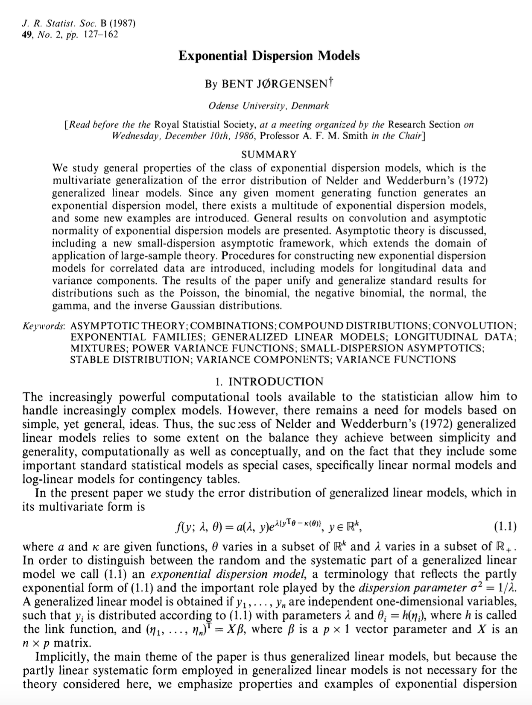

# A tibble: 10 × 3
date wind_dir `Wind speed`
<dttm> <dbl> <dbl>
1 2025-04-14 00:00:00 148 4.6
2 2025-04-14 00:05:00 148 4.4
3 2025-04-14 00:10:00 152 4.1
4 2025-04-14 00:15:00 150 4.1
5 2025-04-14 00:20:00 150 4
6 2025-04-14 00:25:00 148 3.8
7 2025-04-14 00:30:00 151 3.3
8 2025-04-14 00:35:00 145 3
9 2025-04-14 00:40:00 148 3.5
10 2025-04-14 00:45:00 150 2.9Exponential families
Statistical Inference - PhD EcoStatData
Homepage

This unit will cover the following topics:
- One-parameter and multiparameter exponential families
- Likelihood, inference, sufficiency and completeness
The prime role of exponential families in the theory of statistical inference was first emphasized by Fisher (1934).
Most well-known distributions—such as Gaussian, Poisson, Binomial, and Gamma—are instances of exponential families.
Exponential families are the distributions typically considered when presenting the usual “regularity conditions”.
- With a few minor exceptions, this presentation will closely follow Chapters 5 and 6 of Pace and Salvan (1997).
Overview

- Figure 1 of Efron (2023). Three level of statistical modeling.
One-parameter exponential families
Exponential tilting
Let Y be a non-degenerate random variable with support \mathcal{Y} \subseteq \mathbb{R} and density f_0(y) with respect to a dominating measure \nu(\mathrm{d}y).
We aim at building a parametric family \mathcal{F} = \{f(;\theta) : \theta \in \Theta \subseteq \mathbb{R} \} with common support \mathcal{Y} such that f_0 is a special case, namely f_0 \in \mathcal{F}.
A strategy for doing this is called exponential tilting, namely we could set f(y; \theta) \propto e^{\theta y}f_0(y). Thus, if f(y;\theta) is generated via exponential tilting, then f(y; 0) = e^0 f_0(y) = f_0(y).
Let us define the mapping M_0:\mathbb{R}\rightarrow (0,\infty] M_0(\theta):=\int_\mathcal{Y}e^{\theta y}f_0(y)\nu(\mathrm{d}y), \qquad \theta \in \mathbb{R}. If M_0(\theta) is finite in a neighborhood of the origin, it is the moment generating function of Y.
Moreover, we define the set \tilde{\Theta} \subseteq \mathbb{R} as the set of all \theta such that M_0(\theta) is finite, i.e. \tilde{\Theta} = \{\theta \in \mathbb{R} : M_0(\theta) < \infty\}.
Natural exponential family of order one
- The mapping K(\theta) = K_0(\theta) = \log{M_0(\theta)} is the cumulant generating function of f_0. It is finite if and only if M_0(\theta) is finite.
The natural parameter space \tilde{\Theta} is the widest possible and must be an interval; see exercises. The family \mathcal{F}_{\text{ne}}^1 is said to be full, whereas a subfamily of \mathcal{F}_{\text{ne}}^1 with \Theta \subseteq \tilde{\Theta} is non-full.
By definition, all the densities f(y;\theta) \in \mathcal{F}_{\text{ne}}^1 have the same support.
Moment generating function
- In regular problems, the functions M_0(\theta) and K_0(\theta) associated to a r.v. Y with density f_0 are finite in a neighbor of the origin. A sufficient condition is that \tilde{\Theta} is an open set (regular \mathcal{F}_\text{en}^1).
Cumulant generating function
Refer to Pace and Salvan (1997), Section 3.2.5 for detailed derivations. Standardized cumulants \kappa_3/\kappa_2^{3/2} and \kappa_4/\kappa_2^2 are the skewness and the (excess of) kurtosis of Y.
Example: uniform distribution üìñ
Let Y \sim \text{Unif}(0,1) so that f_0(y) = 1 for y \in [0,1]. The exponential tilting of f_0 gives f(y; \theta) \propto e^{\theta y}f_0(y) = e^{\theta y}, \qquad y \in [0,1], \quad \theta \in \mathbb{R}.
The normalizing constant, that is, the moment generating function, is M_0(\theta)= \mathbb{E}(e^{\theta Y}) = \int_0^1 e^{\theta y} \mathrm{d}y = \frac{e^\theta}{\theta}\Big|_0^1 = \frac{e^\theta - 1}{\theta}, \qquad \theta \neq 0. with M_0(0) = 1. Note that M_0 is continuous since \lim_{\theta \to 0}(e^\theta - 1)/\theta = 1.
Consequently, we have M_0(\theta) < \infty for all \theta \in \mathbb{R} and the natural parameter space is \tilde{\Theta} = \mathbb{R}, which is an open set. The resulting density is f(y; \theta) = \frac{\theta e^{\theta y}}{e^{\theta -1}} = \exp\{\theta y - K(\theta)\}, \qquad y \in [0, 1], where K(\theta) = \log\{(e^\theta - 1)/\theta\}.
It holds in general that \tilde{\Theta} = \mathbb{R} whenever f_0 has bounded support; thus, the family is regular.
Example: Poisson distribution üìñ
Let Y \sim \text{Poisson}(1) so that f_0(y) = e^{-1}/y! for y \in \mathbb{N}. The exponential tilting of f_0 gives f(y; \theta) \propto e^{\theta y}f_0(y) = \frac{e^{\theta y}e^{-1}}{y!}, \qquad y \in \mathbb{N}, \quad \theta \in \mathbb{R}.
The normalizing constant, that is, the moment generating function, is M_0(\theta)= \mathbb{E}(e^{\theta Y}) = e^{-1}\sum_{k=0}^\infty \frac{e^{\theta k}}{k!} = \exp\{e^\theta - 1\}, \qquad \theta \in \mathbb{R}.
Consequently, we have M_0(\theta) < \infty for all \theta \in \mathbb{R} and the natural parameter space is \tilde{\Theta} = \mathbb{R}, which is an open set. The resulting density is f(y; \theta) = \frac{e^{\theta y} e^{-1}}{y!}\frac{e^{-e^\theta}}{e^{-1}} = \frac{e^{-1}}{y!}\exp\{\theta y - (e^\theta - 1)\} = \frac{\lambda^y e^{\lambda}}{y!}, \qquad y \in \mathbb{N}, so that K(\theta) = e^\theta - 1 and having defined \lambda = e^\theta.
In other words, the tilted density is again a Poisson distribution with mean e^\theta.
Example: exponential family generated by a Gaussian üìñ
Let Y \sim \text{N}(0,1) so that f_0(y) = 1/(\sqrt{2\pi})e^{-y^2/2} for y \in \mathbb{R}. The exponential tilting of f_0 gives f(y; \theta) \propto e^{\theta y}f_0(y) = \frac{1}{\sqrt{2\pi}}e^{\theta y -y^2/2}, \qquad y,\theta \in \mathbb{R}.
The normalizing constant, that is, the moment generating function, is M_0(\theta)= \mathbb{E}(e^{\theta Y}) = \frac{1}{\sqrt{2\pi}}\int_\mathbb{R}e^{\theta y -y^2/2}\mathrm{d}y = e^{\theta^2/2}, \qquad \theta \in \mathbb{R}.
Consequently, we have M_0(\theta) < \infty for all \theta \in \mathbb{R} and the natural parameter space is \tilde{\Theta} = \mathbb{R}, which is an open set. The resulting density is f(y; \theta) = \frac{1}{\sqrt{2\pi}}e^{\theta y}e^{-y^2/2}e^{-\theta^2/2} = \frac{e^{-y^2/2}}{\sqrt{2\pi}}\exp\{\theta y - \theta^2/2\} = \frac{1}{\sqrt{2\pi}}e^{-\frac{1}{2}(y - \theta)^2}, \qquad y \in \mathbb{R}, so that K(\theta) = \theta^2/2.
In other words, the tilted density is again a Gaussian distribution with mean \theta.
Closure under exponential tilting üìñ
Let \mathcal{F}_{\text{ne}}^1 be an exponential family with parameter \psi and natural parameter space \tilde{\Psi}, with density f(y; \psi) = f_0(y)\exp\{\psi y - K(\psi)\}. The exponential tilting of f(y; \psi) gives f(y; \theta, \psi) \propto e^{\theta y} f(y; \psi) \propto f_0(y) \exp\{(\theta + \psi)y\}, and the normalizing constant of f_0(y) \exp\{(\theta + \psi)y\} is therefore
\int_\mathcal{Y} f_0(y) \exp\{(\theta + \psi)y\} \, \nu(\mathrm{d}y) = M_0(\theta + \psi).Thus, for any \theta and \psi such that M_0(\theta + \psi) < \infty, the corresponding density is f(y; \theta, \psi) = f_0(y) \exp\{(\theta + \psi)y - K(\theta + \psi)\}, which is again a member of the exponential family \mathcal{F}_{\text{ne}}^1, with updated parameter \theta + \psi.
Moments and cumulants
The functions M_0(\theta) and K(\theta) = K_0(\theta) of a \mathcal{F}_\text{en}^1, refer to the baseline density f_0(y). Indeed, for any fixed \theta, the moment generating function of f(y; \theta) \in \mathcal{F}_\text{en}^1 is M_\theta(t) := \int_\mathcal{Y} e^{ty} f(y; \theta)\, \nu(\mathrm{d}y) = \frac{1}{M_0(\theta)} \int_\mathcal{Y} e^{(t + \theta)y} f_0(y)\, \nu(\mathrm{d}y) = \frac{M_0(t + \theta)}{M_0(\theta)}, \quad t + \theta \in \tilde{\Theta}.
Consequently, the cumulant generating function of f(y; \theta) relates to K_0 as follows: K_\theta(t) = \log M_\theta(t) = K_0(t + \theta) - K_0(\theta), \quad t + \theta \in \tilde{\Theta}.
Textbooks sometimes suppress additive constants in defining K_0(\theta), e.g. using e^\theta instead of e^\theta-1. This is inconsequential (constants cancel in K_\theta(t)) but somewhat misleading.
Mean value mapping I
- Moments and cumulants exist for every \theta \in \text{int}\:\tilde{\Theta}. In particular, the cumulants are \kappa_k = \frac{\partial^k}{\partial t^k} K_\theta(t) \Big|_{t = 0} = \frac{\partial^k}{\partial t^k} \left[ K(t + \theta) - K(\theta) \right] \Big|_{t = 0} = \frac{\partial^k}{\partial \theta^k} K(\theta), \qquad k \ge 1.
If f_0 is non-degenerate, then \text{var}_\theta(Y) > 0, implying that K(\theta) is a convex function, and \mu(\theta) is a smooth and monotone increasing, namely is a one-to-one map.
Thus, if \mathcal{F}_\text{en}^1 is a regular exponential family, then \tilde{\Theta} = \text{int}\:\tilde{\Theta} and \mu(\theta) is a reparametrization.
Mean value mapping II
Hence, if \mathcal{Y} = \{0, 1, \dots, N\}, then C = [0,N]. If \mathcal{Y} = \mathbb{N}, then C = \mathbb{R}^+. If \mathcal{Y} = \mathbb{R}, then C = \mathbb{R}.
Because of the properties of expectations, \mu(\theta) \in \text{int}\:C(\mathcal{Y}) for all \theta \in \text{int}\:\tilde{\Theta}, namely \mathcal{M} \subseteq \text{int}\:C(\mathcal{Y}). Indeed, \text{int}\:C(\mathcal{Y}) is an open interval whose extremes are the infimum and supremum of \mathcal{Y}.
Both definitions naturally generalize to the multivariate case when C, \mathcal{Y} \subseteq \mathbb{R}^p, for p > 1.
Mean value mapping III üìñ
In a regular exponential family, the mean value mapping \mu(\theta) is a reparametrization, meaning that for each \theta \in \tilde{\Theta}, there exists a unique mean \mu \in \mathcal{M} such that \mu = \mu(\theta).
Moreover, in regular families, a much stronger result holds: for each value of y \in \text{int}\:C(\mathcal{Y}), there exists a unique \theta \in \tilde{\Theta} such that \mu(\theta) = y.
This establishes a duality between the expectation space \mathcal{M} and the sample space. Any value in \text{int}\:C can be “reached”, that is, there exists a distribution f(y; \theta) with that mean.
This correspondence is crucial in maximum likelihood estimation and inference.
This theorem can actually be strengthened: a necessary and sufficient condition for \mathcal{M} = \text{int}\:C is that the family \mathcal{F}_\text{en}^1 is steep (a regular family is also steep); see Pace and Salvan (1997).
A non regular and non steep exponential family
- Let us a consider an exponential family \mathcal{F}_\text{en}^1 generated by the density f_0(y) = c \frac{e^{-|y|}}{1 + y^4}, \qquad y \in \mathbb{R}. for some normalizing constant c > 0. The exponential tilting of f_0 gives f(y; \theta) \propto e^{\theta y}f_0(y) \propto \frac{e^{-|y| + \theta y}}{1 + y^4}, \qquad y \in \mathbb{R}, \quad \theta \in \tilde{\Theta}.
- The function M_0(\theta) is unavailable in closed form, however \tilde{\Theta} = [-1,1] since M_0(\theta) < \infty, \qquad \theta \in [-1, 1].
- Since \tilde{\Theta} is a closed set, the exponential family is not regular (and is not steep either). In fact, one can show that \lim_{\theta \to 1} \mu(\theta) = a < \infty, implying that \mathcal{M} = (-a, a), \qquad \text{ whereas } \qquad \text{int}\:C = \mathbb{R}.
- In other words, there are no values of \theta such that \mu(\theta) = y for any y > a, which implies, for instance, that the method of moments will encounter difficulties in estimating \theta.
Variance function I üìñ
- The importance of the variance function V(\mu) is related to the following characterization result due to Morris (1982).
Variance function II üìñ
The characterization theorem of Morris (1982) is constructive in nature, as its proof provides a practical way of determining K(\theta) from (\mathcal{M}, V(\mu)). In particular, the function K(\cdot) must satisfy K\left(\int_{\mu_0}^\mu \frac{1}{V(m)}\mathrm{d}m\right) = \int_{\mu_0}^\mu \frac{m}{V(m)}\mathrm{d}m, where \mu_0 is an arbitrary point in \mathcal{M}.
For example, let \mathcal{M} = (0, \infty) and V(\mu) = \mu^2. Then, choosing \mu_0=1 gives K\left(1 - \frac{1}{\mu}\right) = \log\mu, and therefore \theta(\mu) = 1 - 1/\mu, giving \tilde{\Theta} = (-\infty, 1) and \mu(\theta) = (1 - \theta)^{-1}. Hence we obtain K(\theta) = -\log(1 - \theta), which corresponds to the exponential density f_0(y) = e^{-y}, for y > 0.
Well-known exponential families
| Notation | \text{N}(\psi, 1) | \text{Poisson}(\psi) | \text{Bin}(N, \psi) | \text{Gamma}(\nu,\psi), \nu > 0 |
|---|---|---|---|---|
| \mathcal{Y} | \mathbb{R} | \mathbb{N} | \{0, 1, \dots, N\} | (0, \infty) |
| Natural param. | ||||
| \theta(\psi) | \psi | \log{\psi} | \log\{\psi/(1 - \psi)\} | -\psi |
| f_0(y) | (\sqrt{2\pi})^{-1}e^{-\frac{1}{2}y^2} | e^{-1}/ y! | \binom{N}{y}\left(\frac{1}{2}\right)^N | y^{\nu - 1}e^{-y}/\Gamma(\nu) |
| K(\theta) | \theta^2/2 | e^\theta-1 | N \log(1 + e^\theta) - N\log{2} | -\nu \log(1-\theta) |
| \tilde{\Theta} | \mathbb{R} | \mathbb{R} | \mathbb{R} | (-\infty, 0) |
| Mean param. | ||||
| \mu(\theta) | \theta | e^\theta | N e^\theta/(1 + e^{\theta}) | -\nu/\theta |
| \mathcal{M} | \mathbb{R} | (0, \infty) | (0, N) | (0, \infty) |
| V(\mu) | 1 | \mu | \mu(1 - \mu/ N) | \mu^2/\nu |
Quadratic variance functions
There is more in Morris (1982)’s paper. Specifically, he focused on a subclass of quadratic variance functions, which can be written as V(\mu) = a + b\mu + c\mu^2, for some known constants a, b, and c.
Morris (1982) showed that, up to transformations such as convolution, there exist only six families within \mathcal{F}_\text{en}^1 that possess a quadratic variance function. These are: (i) the normal, (ii) the Poisson, (iii) the gamma, (iv) the binomial, (v) the negative binomial, and (vi) a sixth family.
The sixth (less known) distribution is called the generalized hyperbolic secant, and it has density f(y; \theta) = \frac{\exp\left\{\theta y - \log\cos{\theta}\right\}}{2\cosh(\pi y/2)}, \qquad y \in \mathbb{R}, \quad \theta \in (-\pi/2, \pi/2), with mean function \mu(\theta) = \tan{\theta} and variance function V(\mu) = \csc^2(\theta) = 1 + \mu^2, and \mathcal{M} = \mathbb{R}. It is also a regular exponential family.
A general definition of exponential families I
A general definition of exponential families II
When s(y) is an arbitrary function of y, then \mathcal{F}_\text{e}^1 is broader than \mathcal{F}_\text{en}^1.
Without loss of generality, we can focus on the natural parametrization \theta \in \Theta and a density baseline h(y) = f_0(y), meaning that f(y;\theta) \in \mathcal{F}_\text{e}^1 can be written as f(y; \theta) = f_0(y)\exp\{\theta s(y) - K(\theta)\}, because the general case would be a reparametrization of this one.
Let Y \sim f(y; \theta), with f(y; \theta) \in \mathcal{F}_\text{e}^1. Then, the random variable S = s(Y) has density f_S(s; \psi) = \tilde{f}_0(s)\exp\{\theta s - K(\theta)\}, for some baseline density \tilde{f}_0(s), namely f_S(s; \psi) \in \mathcal{F}_\text{en}^1. If in addition s(y) is a one-to-one invertible mapping, this means Y = s^{-1}(S) is just a transformation of an \mathcal{F}_\text{en}^1.
Multiparameter exponential families
Natural exponential families of order p
Let Y be a non-degenerate random variable with support \mathcal{Y} \subseteq \mathbb{R}^p and density f_0(y) with respect to a dominating measure \nu(\mathrm{d}y).
Let us define the mapping M_0:\mathbb{R}^p\rightarrow (0,\infty] M_0(\theta):=\int_\mathcal{Y}e^{\theta^T y}f_0(y)\nu(\mathrm{d}y), \qquad \theta \in \mathbb{R}^p.
- The family \mathcal{F}_{\text{ne}}^p is said to be full, whereas a subfamily of \mathcal{F}_{\text{ne}}^p with \Theta \subseteq \tilde{\Theta} is non-full. Moreover, the family \mathcal{F}_{\text{ne}}^p is said to be regular if \tilde{\Theta} is an open set.
Example: multinomial distribution I üìñ
Let Y = (Y_1,\dots,Y_{p-1}) \sim \text{Multinom}(N; 1/p,\dots,1/p) be a multinomial random vector with uniform probabilities, so that its density f_0 is
f_0(y) = \frac{N!}{y_1!\cdots y_p!}\left(\frac{1}{p}\right)^N, \qquad y = (y_1,\dots,y_{p-1}) \in \mathcal{Y} \subseteq \mathbb{R}^{p-1}, where \mathcal{Y} = \{(y_1,\dots,y_{p-1}) \in \{0,\dots,N\}^{p-1} : \sum_{j=1}^{p-1} y_j \le N\}, having set y_p := N - \sum_{j=1}^{p-1} y_j.The exponential tilting of f_0 yields f(y; \theta) \propto f_0(y) e^{\theta^T y} = \frac{N!}{y_1!\cdots y_p!}\left(\frac{1}{p}\right)^N e^{\theta_1 y_1 + \cdots + \theta_{p-1} y_{p-1}}, \qquad y \in \mathcal{Y}, \;\theta \in \mathbb{R}^{p-1}.
As a consequence of the multinomial theorem, the normalizing constant, that is, the moment generating function, is
M_0(\theta) = \mathbb{E}\left(e^{\theta^T Y}\right) = \left(\frac{1}{p}\right)^N(1 + e^{\theta_1} + \cdots + e^{\theta_{p-1}})^N. Thus M_0(\theta) < \infty for all \theta \in \mathbb{R}^{p-1} and the natural parameter space is the open set \tilde{\Theta} = \mathbb{R}^{p-1}.
Example: multinomial distribution II üìñ
The resulting tilted density is f(y; \theta) = f_0(y)e^{\theta^Ty - K(\theta)} = \frac{N!}{y_1!\cdots y_p!}\frac{e^{\theta_1 y_1 + \cdots + \theta_{p-1}y_{p-1}}}{(1 + e^{\theta_1} + \cdots + e^{\theta_{p-1}})^N}, where K(\theta) = \log{M_0(\theta)} = N\log(1 + e^{\theta_1} + \cdots + e^{\theta_{p-1}}) - N\log{p}.
In other words, the tilted density is again a multinomial distribution with parameters N and probabilities \pi_j = e^{\theta_j} / (1 + e^{\theta_1} + \cdots + e^{\theta_{p-1}}). In fact, we can write: \begin{aligned} f(y; \theta) &= \frac{N!}{y_1!\cdots y_p!}\frac{e^{\theta_1 y_1} \cdots e^{\theta_p y_p}}{(\sum_{j=1}^p e^{\theta_j})^{y_1} \cdots (\sum_{j=1}^p e^{\theta_j})^{y_p}} = \frac{N!}{y_1!\cdots y_p!} \prod_{j=1}^p\left(\frac{e^{\theta_j}}{\sum_{k=1}^p e^{\theta_k}}\right)^{y_j} \\ &= \frac{N!}{y_1!\cdots y_p!} \prod_{j=1}^p\pi_j^{y_j}. \end{aligned} where we defined \theta_p := 0, so that \sum_{j=1}^pe^{\theta_j} = 1 + e^{\theta_1} + \cdots + e^{\theta_{p-1}}, recalling that \sum_{j=1}^py_j = N.
The tilted density belongs to a regular natural exponential family \mathcal{F}_\text{en}^{p-1} of order p-1.
Example: independent exponential families üìñ
Let Y = (Y_1,\dots,Y_p) be a random vector of independent random variables, each belonging to a full natural exponential family \mathcal{F}_\text{en}^1 of order 1, with density f(y_j; \theta_j) = f_j(y_j)\exp\{\theta_j y_j - K_j(\theta_j)\}, \qquad \theta_j \in \tilde{\Theta}_j.
Let \theta = (\theta_1,\dots,\theta_p). Because of independence, the joint distribution of Y is \begin{aligned} f(y;\theta) &= \prod_{j=1}^p f(y_j;\theta_j) = \prod_{j=1}^p f_j(y_j)\exp\{\theta_j y_j - K_j(\theta_j)\} \\ &= \left[\prod_{j=1}^p f_j(y_j)\right] \exp\left\{\sum_{j=1}^p \theta_j y_j - \sum_{j=1}^p K_j(\theta_j)\right\} \\ &= f_0(y) \exp\{\theta^T y - K(\theta)\}, \end{aligned} where f_0(y) = \prod_{j=1}^p f_j(y_j), K(\theta) = \sum_{j=1}^p K_j(\theta_j), and the natural parameter space is \tilde{\Theta} = \tilde{\Theta}_1 \times \cdots \times \tilde{\Theta}_p.
Thus, f(y;\theta) is an \mathcal{F}_\text{en}^p, in which K(\theta) is a separable function.
Mean value mapping and other properties
Let Y \sim f(y; \theta), with f(y; \theta) \in \mathcal{F}_\text{en}^p. The cumulant generating function is
K_\theta(t) = \log M_\theta(t) = K_0(t + \theta) - K_0(\theta), \qquad t + \theta \in \tilde{\Theta}. In particular, the first two moments of Y are obtained as:
\mu(\theta) := \mathbb{E}_\theta(Y) = \frac{\partial}{\partial \theta} K(\theta), \qquad \text{var}_\theta(Y) = \frac{\partial}{\partial \theta^\top} \mu(\theta) = \frac{\partial^2}{\partial \theta \partial \theta^\top} K(\theta),If f_0 is non-degenerate, then the covariance matrix \text{var}_\theta(Y) is positive definite, implying that K(\theta) is a convex function, and \mu(\theta) is a smooth one-to-one map.
The definitions of mean value mapping \mu(\theta), its range \mathcal{M}, the convex hull C(\mathcal{Y}) of the sample space, and the variance function V(\mu) also naturally extend to the multi-parameter setting.
Refer to Jorgensen (1987) for an extension of the results of Morris (1982) about V(\mu).
Independence of the components
- This theorem essentially establishes that if the baseline density f_0(\cdot) has independent components, then the exponential tilting preserves independence.
This generalizes a well-known fact about multivariate Gaussians, which are in fact an \mathcal{F}_\text{en}^p.
In practice, if the Hessian matrix of K(\theta) is diagonal, then the natural observations are independent. This occurs whenever K(\theta) is separable.
Marginal and conditional distributions
Consider a \mathcal{F}_\text{en}^p family, so that f(y; \theta) = f_0(y) \exp\{\theta^T y - K(\theta)\}.
Let y = (t, u) be a partition of the natural observations y, where t has k components and u has p-k components. Let us partition \theta accordingly, so that \theta = (\tau, \zeta) and f(y; \tau, \zeta) = f_0(y) \exp\{\tau^T t + \zeta^T u - K(\tau, \zeta)\}, \qquad (\tau, \zeta) \in \tilde{\Theta}.
Conditional likelihoods
The former result on marginal and conditional laws is not just an elegant probabilistic fact. Indeed, it has meaningful inferential applications.
Often, we can split the parameter vector \theta into a parameter of interest \tau and a nuisance parameter \zeta. We are not interested in learning \zeta.
A practical drawback of this approach is that the conditional cumulant generating function K_u(\tau) is not always available in closed form, albeit with notable exceptions.
The approach is valid, in the sense that a likelihood based on f_{T \mid U = u} is a genuine likelihood. On the other hand, note that the full likelihood would be based on f(y; \tau, \zeta) = f_U(u; \tau, \zeta) \, f_{T \mid U = u}(t; u, \tau), and thus the conditional likelihood is discarding information, that is, it neglects f_U(u; \tau, \zeta).
A general definition of exponential families I
- If q > p, then \psi is not identifiable and this possibility should be discarded.
- If q = p, then \theta(\psi) must be a one-to-one mapping, i.e., a reparametrization, otherwise the model is again not identifiable.
- If q < p, we have a (p,q)-curved exponential family, which corresponds to a restriction of the natural parameter space.
Curved exponential families

- Figure 4.1 of Efron (2023), Chapter 4. Three levels of statistical modeling, now with a fourth level added representing curved exponential families.
A general definition of exponential families II
We refer to Efron (2023), Chapter 4, for a detailed discussion on curved exponential families. From now on, we will focus on the p = q case.
Without loss of generality, we can focus on the natural parametrization \theta \in \Theta \subseteq \mathbb{R}^p and baseline density h(y) = f_0(y), meaning that f(y;\theta) \in \mathcal{F}_\text{e}^p can be written as f(y; \theta) = f_0(y)\exp\{\theta^T s(y) - K(\theta)\}, because the general case would be a reparametrization of this one.
Let Y \sim f(y; \theta), with f(y; \theta) \in \mathcal{F}_\text{e}^p. Then, the random vector S = s(Y) = (s_1(Y), \dots, s_p(Y)) has density f_S(s; \theta) = \tilde{f}_0(s)\exp\{\theta^T s - K(\theta)\}, for some baseline density \tilde{f}_0(s), namely f_S(s; \theta) \in \mathcal{F}_\text{en}^p. If in addition s(y) is a one-to-one invertible mapping, this means Y = s^{-1}(S) is just a transformation of an \mathcal{F}_\text{en}^p.
Example: gamma distribution üìñ
The family \text{Gamma}(\nu, \lambda) with \nu,\lambda > 0 is an \mathcal{F}_\text{e}^2. In fact, its density is \begin{aligned} f(y; \nu, \lambda) &= \frac{\lambda^\nu}{\Gamma(\nu)}y^{\nu -1}e^{-\lambda y} = \frac{1}{y}\exp\{\nu\log{y} - \lambda y - \log\Gamma(\nu) + \nu\log{\lambda}\} \\ &= h(y)\exp\{\theta(\psi)^T s(y) - G(\psi)\}. \end{aligned} where h(y) = y^{-1}, the sufficient statistic s(y) = (s_1(y), s_2(y)) = (\log{y}, y), whereas the natural parameters and the cumulant generating function are \theta(\psi) = (\theta_1(\psi), \theta_2(\psi)) = (\nu, -\lambda), \qquad G(\psi) = \log{\Gamma(\nu)} - \nu\log{\lambda}, having set \psi = (\nu, \lambda).
As previously shown, this implies that the family f(s; \theta) = \tilde{h}(s)\exp\{\theta^Ts - \log{\Gamma(\theta_1)} + \theta_1\log(-\theta_2)\}, \qquad \theta \in \tilde{\Theta}, is a regular natural exponential family of order 2, with some function \tilde{h}(s).
Example: von Mises distribution I
Let Y be a random variable describing an angle, so that \mathcal{Y} = (0, 2\pi), and let us consider the uniform density on the circle, namely f_0(y) = \frac{1}{2\pi}, \qquad y \in (0, 2\pi).
We define a tilted density f(y; \theta) \in \mathcal{F}_\text{e}^2 by considering s(y) = (\cos{y}, \sin{y}), i.e., the cartesian coordinates of y. This choice of s(y) ensures the appealing property f(y;\theta) = f(y + 2k\pi;\theta).
More precisely, let \theta = (\theta_1,\theta_2) and define the parametric family of densities f(y; \theta) = f_0(y)\exp\{\theta^Ts(y) - K(\theta)\}, \qquad \theta \in \tilde{\Theta}, where h(y) = 1/2\pi. The normalizing constant has a “closed form” \exp{K(\theta)} = \frac{1}{2\pi}\int_0^{2\pi}\exp\{\theta_1\cos(y) + \theta_2\sin(y)\}\mathrm{d}y = \mathcal{A}_0(||\theta||_2), where \mathcal{A}_\nu(\cdot) is known as the modified Bessel function of the first kind and order \nu.
It is easy to check that K(\theta) < \infty for all values of \theta \in \mathbb{R}^2; therefore, \tilde{\Theta} = \mathbb{R}^2. This completes the definition of what is known as the von Mises distribution.
Example: von Mises distribution II
Instead of the natural parametrization, it is often convenient to consider a reparametrization \psi =(\tau, \gamma), defined through the one-to-one mapping \theta(\psi) = (\tau\cos{\gamma}, \tau\sin{\gamma}), \qquad \psi \in \tilde{\Psi} = (0, \infty) \times (0, 2\pi).
Using this parametrization, thanks to well-known trigonometric relationships, we obtain the more familiar formulation of the von Mises distribution, which is f(y; \psi) = h(y)\exp\{\theta(\psi)s(y) - G(\psi)\} = \frac{1}{2\pi \mathcal{A}_0(\tau)}e^{\tau\cos(y - \gamma)}, \qquad y \in (0, 2\pi), so that \gamma \in (0,2\pi) can be interpreted as the location and \tau > 0 as the precision.
We also note that the distribution of s(Y) is a regular natural exponential family of order 2, with density f_S(s; \theta) = \frac{1}{2\pi}\exp\{\theta^Ts - \log\mathcal{A}_0(||\theta||_2)\}, \qquad s \in \mathcal{S} = \{(s_1,s_2) \in \mathbb{R}^2 : s_1^2 + s_2^2 = 1\}, clarifying that S = s(Y) is a random vector taking values on a circle with unit radius.
Example: wind direction in Venice I
The von Mises distribution is sometimes regarded as the “Gaussian distribution for circular data”. To provide a concrete example, let us consider the wind directions measured from the San Giorgio meteorological station, in Venice.
Measurements are recorded every 5 minutes, from 14-04-2025 to 18-04-2025, for a total of n = 1153. The variable
wind_diris recorded in degrees, i.e., between 0 and 360.
The dataset is available here. The original source is the webpage of Venice municipality.
Example: wind direction in Venice II

- This is a somewhat misleading graphical representation of wind directions evolving over time. Indeed, the “spikes” are not real: the angles 1 and 359 are, in fact, very close.
Example: wind direction in Venice III
- A better graphical representation of wind directions and wind speed, using Cartesian coordinates. From this wind rose, it is clear the winds were coming mostly from the east.
Inference
Independent sampling, sufficiency and completeness
Let Y_1,\dots,Y_n be iid random vectors with density f(y; \theta), where f(y; \theta) \in \mathcal{F}_\text{e}^p and, without loss of generality, we let f(y; \theta) = f_0(y)\exp\{\theta^T s(y) - K(\theta)\}. The likelihood function is L(\theta; \bm{y}) = \prod_{i=1}^n \exp\left\{\theta^T s(y_i) - K(\theta)\right\} = \exp\left\{\theta^T \sum_{i=1}^n s(y_i) - n K(\theta)\right\}, from which we see that s = \sum_{i=1}^n s(y_i) = \left(\sum_{i=1}^n s_1(y_i), \dots, \sum_{i=1}^n s_p(y_i)\right) is the minimal sufficient statistic as long as n \ge p, which has fixed dimension p whatever the sample size.
Inference can therefore be based on the random vector S = \sum_{i=1}^n s(Y_i), whose distribution is f_S(s; \theta) = \tilde{f}_0(s)\exp\{\theta^T s - \tilde{K}(\theta)\}, with \tilde{K}(\theta) = n K(\theta) and for some density \tilde{f}_0(s). In other words, f_S(s; \theta) \in \mathcal{F}_\text{en}^p.
Sufficiency and completeness
Thus, the log-likelihood function, after a reduction via sufficiency, is \ell(\theta) = \ell(\theta; s) = \theta^T s - n K(\theta), \qquad \theta \in \tilde{\Theta}, with S = \sum_{i=1}^n s(Y_i) being distributed as a \mathcal{F}_\text{en}^p with cumulant generating function n K(\theta), whereas each s(Y_i) is distributed as a \mathcal{F}_\text{en}^p with cumulant generating function K(\theta).
The completeness of S in exponential families is a classical result that enables the usage of the Rao-Blackwell-Lehmann-Scheffé theorem for finding the UMVUE.
Moreover, the existence of a minimal sufficient statistic that performs a non-trivial dimensionality reduction, from n to p and with p \le n, is a major simplification.
This only occurs in exponential families, except for non-regular cases.
Likelihood quantities
After a sufficiency reduction, we get \ell(\theta) = \theta^T s - n K(\theta). Thus, the score function is \ell^*(\theta) = s - n \frac{\partial}{\partial \theta}K(\theta) = s - n \mu(\theta), where \mu(\theta) = \mathbb{E}_\theta(s(Y_1)) is the mean value mapping of each s(Y_i) and n \mu(\theta) = \mathbb{E}(S).
By direct calculation, we show that the first Bartlett identity holds, namely \mathbb{E}_\theta(\ell^*(\theta; S)) = \mathbb{E}_\theta(S) - n\mu(\theta) = n\mu(\theta) - n\mu(\theta)= \bm{0}. The Fisher information is straightforward to compute, being equal to I(\theta) = \mathbb{E}_\theta(\ell^*(\theta)\ell^*(\theta)^T) = \mathbb{E}_\theta\{(S - n\mu(\theta))(S - n\mu(\theta))^T\} = \text{var}_\theta(S) = n \, \text{var}_\theta(s(Y_1)).
Moreover, the observed information is \mathcal{I}(\theta) = -\frac{\partial^2}{\partial \theta \partial \theta^T}\ell(\theta) = \frac{\partial^2}{\partial \theta \partial \theta^T}\tilde{K}(\theta)= n\frac{\partial^2}{\partial \theta \partial \theta^T}K(\theta) = n \, \text{var}_\theta(s(Y_1)), which proves the second Bartlett identity as an implication of the remarkable identity \mathcal{I}(\theta) = I(\theta), stronger than the usual I(\theta) = \mathbb{E}_\theta(\mathcal{I}(\theta)). In fact, \mathcal{I}(\theta) is non-stochastic.
Existence of the maximum likelihood
- The maximum likelihood estimate \hat{\theta}, if it exists, is the unique solution of the score equation s - n \mu(\theta) = \bm{0}, \qquad \text{so that} \qquad \hat{\theta} = \mu^{-1}\left(\frac{s}{n}\right) = \mu^{-1}\left(\frac{1}{n}\sum_{i=1}^ns(y_i)\right). It is unique because \ell(\theta) is concave in \theta, namely its second derivative is \frac{\partial^2}{\partial \theta \partial \theta^T}\ell(\theta) = -\text{var}_\theta(S) < 0, \qquad \theta \in \tilde{\Theta}.
- As a corollary, if \mathcal{F}_\text{en}^p is regular, the MLE exists and is unique with probability one if and only if the boundary of C = C(\mathcal{S}) has probability 0. This is often violated when S is discrete.
Likelihood quantities: mean parametrization üìñ
Let us consider the mean parametrization \mu = \mu(\theta) = \mathbb{E}_\theta(s(Y_1)), whose inverse is \theta = \theta(\mu). The log-likelihood is: \ell(\mu) = \ell(\theta(\mu)) = \theta(\mu)^T s - n K(\theta(\mu)), \qquad \mu \in \mathcal{M}.
Hence, using the chain rule of differentiation, we obtain the score \ell^*(\mu) = \left(\frac{\partial}{\partial \mu}\theta(\mu)\right)(s - n \mu) = \text{var}_{\mu}(s(Y_1))^{-1}(s - n \mu), where the last step follows from the properties of the derivatives of inverse functions.
Thus, the observed information matrix for the mean parametrization is \mathcal{I}_\mu(\mu) = -\frac{\partial^2}{\partial \mu \partial \mu^T}\ell(\mu) = -\left(\frac{\partial^2}{\partial \mu \partial \mu^T}\theta(\mu)\right)(s - n \mu) + n \, \text{var}_{\mu}(s(Y_1))^{-1}, whereas the Fisher information matrix for \mu is I_\mu(\mu) = \mathbb{E}_\mu(\mathcal{I}_\mu(\mu)) = n \, \text{var}_{\mu}(s(Y_1))^{-1} = n \, V(\mu)^{-1}.
Maximum likelihood: mean parametrization
Thus, the maximum likelihood estimate of the mean parametrization \hat{\mu} = \mu(\hat{\theta}) is \hat{\mu} = \frac{s}{n} = \frac{1}{n}\sum_{i=1}^ns(y_i). This means \hat{\mu} is both the maximum likelihood and the method of moments estimate of \mu.
It is also an unbiased estimator, because by definition \mathbb{E}(\hat{\mu}) = \frac{1}{n}\sum_{i=1}^n\mathbb{E}_\mu(s(Y_i)) = \mathbb{E}_\theta(s(Y_1)) = \mu.
Furthermore \hat{\mu} is the UMVUE of \mu. Indeed, we could first notice that \hat{\mu} is a function of S, which is a complete sufficient statistic Alternatively, we could note that the variance of \hat{\mu} is \text{var}_\mu(\hat{\mu}) = \frac{1}{n}\text{var}_\mu(s(Y_1))= \frac{1}{n}V(\mu) = \mathcal{I}_\mu(\mu)^{-1}, which corresponds to the Cramer-Rao lower bound.
Example: binomial distribution üìñ
Let Y_1,\dots,Y_n be iid Bernoulli random variables with mean \mu \in (0,1), that is \text{pr}(Y_i = 1) = \mu. Then, the log-likelihood function is \ell(\mu) = \sum_{i=1}^n[y_i\log{\mu} + (1 - y_i)\log{(1 - \mu)}] = s \log{\mu} + (n - s)\log{(1 - \mu)}, with S = \sum_{i=1}^nY_i being the minimal sufficient statistic and the natural parametrization is \theta(\mu) = \log{\mu/(1-\mu)}. Note that S \sim \text{Binom}(n, \mu).
The variance function is V(\mu) = \text{var}_\mu(Y_i)= \mu(1-\mu), so that the score function becomes \ell^*(\mu) = \frac{s}{\mu} - \frac{n - s}{1 - \mu} = \frac{1}{V(\mu)}(s - n\mu), leading to the well-known UMVUE maximum likelihood estimator \hat{\mu} = s/n.
Finally, the observed information and the Fisher information equal, respectively \mathcal{I}_\mu(\mu) = \frac{s}{\mu^2} - \frac{n - s}{(1 - \mu)^2}, \qquad I_\mu(\mu) = \mathbb{E}_\mu(\mathcal{I}_\mu(\mu)) = \frac{n}{\mu(1 - \mu)} = \frac{n}{V(\mu)}.
Example: von Mises distribution III üìñ
Let Y_1,\dots,Y_n be iid random variables from a Von-Mises distribution with density f(y; \psi) = (2\pi\mathcal{A}_0(\tau))^{-1}\exp\{\tau\cos(y - \gamma)\}, with y \in (0, 2\pi), therefore the log-likelihood is \ell(\psi) = \tau\sum_{i=1}^n\cos(y_i - \gamma) - n\log{\mathcal{A}_0(\tau)}.
The Jacobian of the log-likelihood is \frac{\partial}{\partial \gamma} \ell(\psi) = \tau\sum_{i=1}^n\sin(y_i - \gamma), \quad\frac{\partial}{\partial \tau}\ell(\psi) = \sum_{i=1}^n\cos{(y_i - \gamma)} - n\frac{\mathcal{A_1(\tau)}}{\mathcal{A}_0(\tau)}.
Thus, the maximum likelihood estimate (\hat{\gamma},\hat{\tau}) is the solution of the following equations \tan(\hat{\gamma}) = \frac{\sum_{i=1}^n\sin{y_i}}{\sum_{i=1}^n\cos{y_i}}, \qquad \frac{1}{n}\sum_{i=1}^n\cos{(y_i - \hat{\gamma})} = \frac{\mathcal{A_1(\hat{\tau})}}{\mathcal{A}_0(\hat{\tau})}. The estimate for \tau can be obtained numerically e.g. using the
circular::A1invfunction.
Example: wind direction in Venice IV

- The estimated values are \hat{\gamma} = 1.375 (corresponding to about 79 degrees) and \hat{\tau} = 2.51.
Example: wind direction in Venice V
Asymptotic theory: remarks
Let us consider an iid sample from a model such that the minimal sufficient statistic belongs to a regular exponential family \mathcal{F}_\text{en}^p, with natural parameter \theta \in \tilde{\Theta}.
It is straightforward to verify that the regularity conditions A1–A6 from Unit A are all satisfied. Thus, Theorem 5.1 of Lehmann and Casella (1998) applies directly.
We also proved that, if the score function has a root, then the maximum likelihood estimate \hat{\theta} exists and is the unique solution of \ell^*(\theta) = \mathbf{0}, where \ell^*(\theta) = s - n \mu(\theta).
The maximum likelihood estimate may fail to exist if s lies on the boundary of C(\mathcal{S}). However, as n \to \infty, the probability that s lies on the boundary of C(\mathcal{S}) tends to zero.
Indeed, by the law of large numbers, S/n converges almost surely to \mu(\theta) \in \mathcal{M} = \text{int}\:\mathcal{C}(S), implying that a unique root of the score function eventually exists with probability one.
Wald inequality: a direct proof üìñ
Let us recall that Wald inequality states that \mathbb{E}_{\theta_0}\left(\ell(\theta; \bm{Y})\right) < \mathbb{E}_{\theta_0}\left(\ell(\theta_0; \bm{Y})\right), \qquad \theta \neq \theta_0, and the proof relies on the Kullback-Leibler divergence.
Let us focus on the univariate case \Theta \subseteq \mathbb{R}. It is instructive to provide a direct proof for exponential families, recalling that \ell(\theta_0\bm{Y}) = \theta S - n K(\theta).
In the first place, note that \mathbb{E}_{\theta_0}(\ell(\theta; \bm{Y})) = n \left[\theta \mu(\theta_0) - K(\theta)\right], implying that Wald inequality holds true if and only if \mu(\theta_0)\left(\theta_0 - \theta\right) > K(\theta_0) - K(\theta), \qquad \theta \neq \theta_0.
This is indeed the case, the above being a characterization of convexity for K(\cdot), which we previously show having \partial^2 /\partial \theta^2 K(\theta) > 0 for all \theta \in \tilde{\Theta}. Moreover, recall that \mu(\theta) = \partial /\partial \theta K(\theta).
References and study material
Main references
- Pace and Salvan (1997)
- Chapter 5 (Exponential families)
- Chapter 6 (Exponential dispersion families)
- Davison (2003)
- Chapter 5 (Models)
- Efron and Hastie (2016)
- Chapter 5 (Parametric models and exponential families)
- Efron (2023)
- Chapter 1 (One-parameter exponential families)
- Chapter 2 (Multiparameter exponential families)
Morris (1982)

Morris (1982, AoS) is a seminal paper in the field of exponential families.
It is a must-read, as it encompasses and overviews many of the results discussed in this unit.
It also shows that exponential families with quadratic variance are infinitely divisible, provided that c \ge 0.
The paper covers several advanced topics, including:
- orthogonal polynomials;
- limiting results;
- large deviations;
- …and more.
Jorgensen (1987)

Jorgensen (1987, JRSSB) is another seminal paper in the field of exponential dispersion families.
It studies a multivariate extension of exponential dispersion models of Nelder and Wedderburn (1972).
It characterizes the entire class in terms of variance function, extending Morris (1982).
It also describes a notion of asymptotic normality called small sample asymptotics.
It is a read paper and among the discussants we find, J.A. Nelder, A.C. Davison, C.N. Morris.
Diaconis and Ylvisaker (1979)

Bayesian statistics also greatly benefits from the use of exponential families.
Diaconis and Ylvisaker (1979, AoS) is a seminal paper on the topic of conjugate priors.
Broadly speaking, conjugate priors always exist for exponential families.
These are known as the Diaconis–Ylvisaker conjugate priors.
Classical priors such as beta–Bernoulli and Poisson–gamma are special cases.
The posterior expectation under the mean parametrization is a linear combination of the data and the prior mean.
Consonni and Veronese (1992)

Consonni and Veronese (1992, JASA) is another Bayesian contribution which refines the results of Diaconis and Ylvisaker (1979).
It investigates when a conjugate prior specified on the mean parameter \mu of a natural exponential family leads to a linear posterior expectation of \mu.
The main result shows that this posterior linearity holds if and only if the variance function is quadratic.
The paper also explores the monotonicity of the posterior variance of \mu with respect to both the sample size and the prior sample size.
References
Billingsley, Patrick. 1995. Probability And Measure. Wiley.
Consonni, Guido, and Piero Veronese. 1992. “Conjugate Priors for Exponential Families Having Quadratic Functions.” Journal of the American Statistical Association 87 (420): 1123–27.
Davison, A. C. 2003. Statistical Models. Cambridge University Press.
Diaconis, Persi, and Donald Ylvisaker. 1979. “Conjugate prior for exponential families.” The Annals of Statistics 7 (2): 269–92.
Efron, Bradley. 2023. Exponential Families in Theory and Practice. Cambridge University Press.
Efron, Bradley, and Trevor Hastie. 2016. Computer Age Statistical Inference. Cambridge University Press.
Fisher, R. A. 1934. “Two new properties of mathematical likelihood.” Proceedings of the Royal Society of London. Series A 144 (852): 285–307.
Jorgensen, Bert. 1987. “Exponential dispersion model.” Journal of the Royal Statistical Society. Series B: Methodological 49 (2): 127–62.
Lehmann, E. L., and G. Casella. 1998. Theory of Point Estimation, Second Edition. Springer.
Morris, Carl N. 1982. “Natural Exponential Families with Quadratic Variance Functions.” Annals of Statistics 10 (1): 65–80.
Nelder, J. A., and R. W. M. Wedderburn. 1972. “Generalized linear models.” Journal of the Royal Statistical Society. Series A: Statistics in Society 135 (3): 370–84.
Pace, Luigi, and Alessandra Salvan. 1997. Principles of statistical inference from a Neo-Fisherian perspective. Vol. 4. Advanced Series on Statistical Science and Applied Probability. World Scientific.
Robert, Christian P. 1994. The Bayesian Choice: from decision-theoretic foundations to computational implementation. Springer.